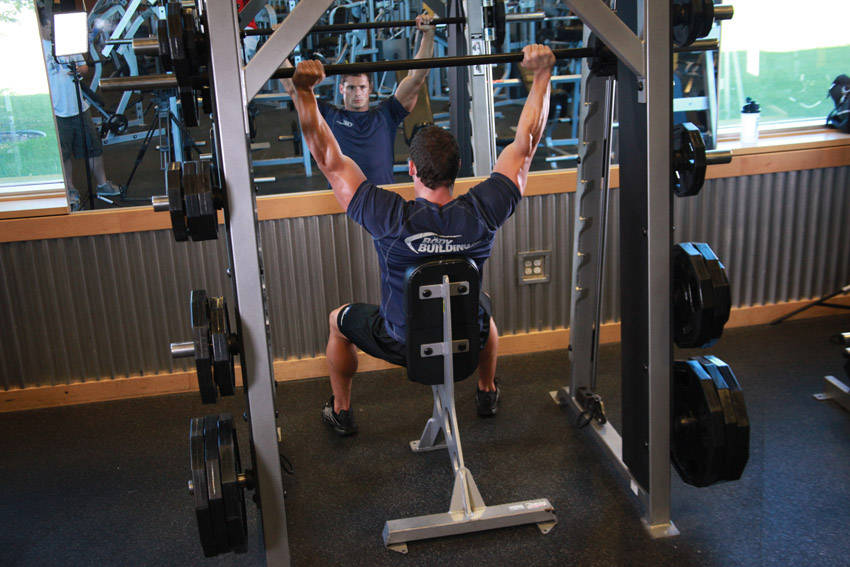

- To begin, place a flat bench (or preferably one with back support) underneath a smith machine. Position the barbell at a height so that when seated on the flat bench, the arms must be almost fully extended to reach the barbell.
- Once you have the correct height, sit slightly in behind the barbell so that there is an imaginary straight line from the tip of your nose to the barbell. Your feet should be stationary. Grab the barbell with the palms facing forward, unlock it and lift it up so that your arms are fully extended. This is the starting position.
- Slowly begin to lower the barbell until it is level with your chin while inhaling.
- Then lift the barbell back to the starting position using your shoulders while exhaling.
- Repeat for the recommended amount of repetitions.
This exercise appears in Programmd training programs. Take the quiz to find one for your gym.
Find your program